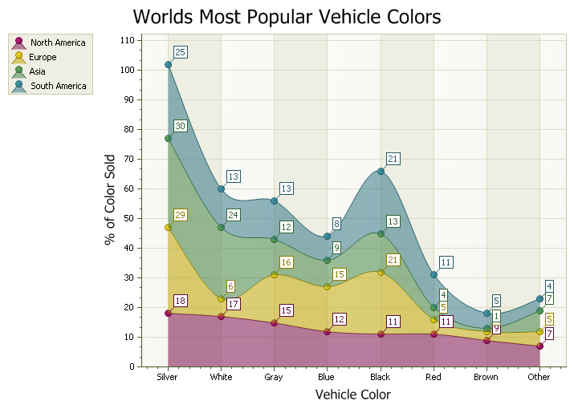

Help >
Codejock ActiveX Controls v15.3 > Xtreme Chart Pro > Objects > ChartStackedSplineAreaSeriesStyle Object >
Overview
| Xtreme Chart Pro ActiveX Control v15.3 |
Stacked Spline Area Chart Style
For a list of all members defined in this module, see ChartStackedSplineAreaSeriesStyle members.
 
|
A Stacked Spline Area chart is very similar to a spline chart. Data is displayed using different colors in the "area" below the line. Each series of points is represented with a different color. The lines in the spline chart are much more smooth flowing than an area chart. Area charts are commonly used to display accumulated values over a period of time.

'Stacked Spline Sample
ChartControl.Content.Legend.Visible = True
ChartControl.Content.Legend.HorizontalAlignment = xtpChartLegendFar
ChartControl.Content.EnableMarkup = True
If ChartControl.Content.Series.Count > 0 Then
ChartControl.Content.Series.DeleteAll
End If
ChartControl.Content.Legend.Visible = True
ChartControl.Content.Legend.HorizontalAlignment = xtpChartLegendNearOutside
Dim Series As ChartSeries
Set Series = ChartControl.Content.Series.Add("North America")
Series.Points.Add "Silver", 18
Series.Points.Add "White", 17
Series.Points.Add "Gray", 15
Series.Points.Add "Blue", 12
Series.Points.Add "Black", 11
Series.Points.Add "Red", 11
Series.Points.Add "Brown", 9
Series.Points.Add "Other", 7
Set Series = ChartControl.Content.Series.Add("Europe")
Series.Points.Add "Silver", 29
Series.Points.Add "White", 6
Series.Points.Add "Gray", 16
Series.Points.Add "Blue", 15
Series.Points.Add "Black", 21
Series.Points.Add "Red", 5
Series.Points.Add "Brown", 3
Series.Points.Add "Other", 5
Set Series = ChartControl.Content.Series.Add("Asia")
Series.Points.Add "Silver", 30
Series.Points.Add "White", 24
Series.Points.Add "Gray", 12
Series.Points.Add "Blue", 9
Series.Points.Add "Black", 13
Series.Points.Add "Red", 4
Series.Points.Add "Brown", 1
Series.Points.Add "Other", 7
Set Series = ChartControl.Content.Series.Add("South America")
Series.Points.Add "Silver", 25
Series.Points.Add "White", 13
Series.Points.Add "Gray", 13
Series.Points.Add "Blue", 8
Series.Points.Add "Black", 21
Series.Points.Add "Red", 11
Series.Points.Add "Brown", 5
Series.Points.Add "Other", 4
ChartControl.Content.Titles.Add "Worlds Most Popular Vehicle Colors"
ChartControl.Content.Legend.Visible = True
Set ChartControl.Content.Series(3).Style = New ChartStackedSplineAreaSeriesStyle
Set ChartControl.Content.Series(2).Style = New ChartStackedSplineAreaSeriesStyle
Set ChartControl.Content.Series(1).Style = New ChartStackedSplineAreaSeriesStyle
Set ChartControl.Content.Series(0).Style = New ChartStackedSplineAreaSeriesStyle
Dim Diagram As ChartDiagram2D
Set Diagram = ChartControl.Content.Series(0).Diagram
Diagram.AxisY.Title = "% of Color Sold"
Diagram.AxisY.Title.Visible = True
Diagram.AxisX.Title = "Vehicle Color"
Diagram.AxisX.Title.Visible = True